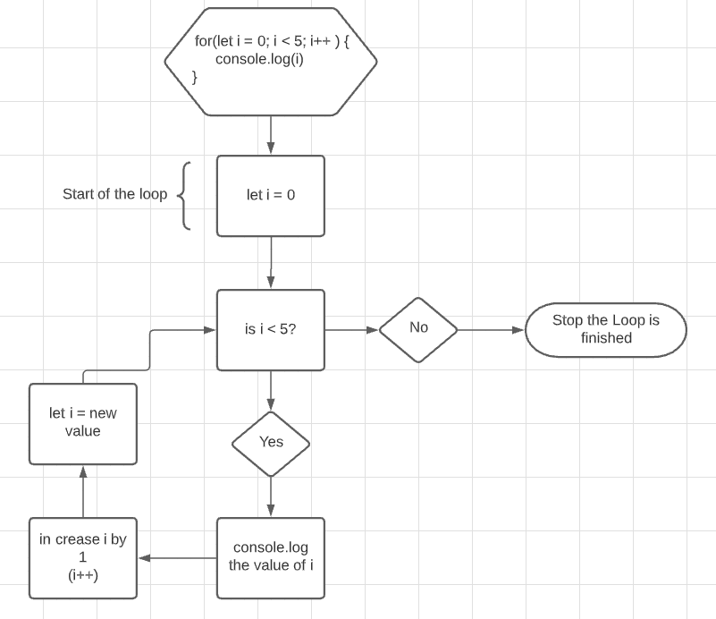

JavaScript Loops
When creating functions in JS we often need to go through data. Sometimes we only need parts of that data set or maybe we need it all or need to do something with it. To do this we use Loops.
Understanding loops however isn't always as easy as some folks think. Having been a technician while in the Navy I had to look at technical drawings all the time. When a system wasn't getting the right signals I would need to trace back where the signal got lost. Flow charts saved our lives.
